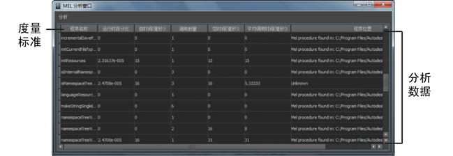

MEL 分析器是一个分析系统，可用于监视工具使用情况并记录确定瓶颈所需的度量标准。此外，分析数据还可用于快速而轻松地诊断 MEL 工具集。

度量标准
-
程序名称(Proc Name)
- 程序的名称。
-
运行时百分比(Percent of Runtime)
- 基于分析的时间跨度的程序总运行时的百分比（“自时间”(Self Time)）。
-
自时间(毫秒)(Self Time (ms))
- 执行程序需要的时间总量（毫秒），不包括其子程序引发的时间。
-
调用数量(Number of calls)
- 程序被调用的次数。
-
总时间(毫秒)(Total Time (ms))
- 程序花费在其各种调用上的时间总量（毫秒）。
注： 此值包括程序的子程序引发的时间。
-
平均调用时间(毫秒)(Average Call Time (ms))
- 程序每次调用花费的平均时间量（毫秒）。
-
程序位置(Proc Location)
- 程序的位置（如果它是已知的）。所有局部程序被列为“未知”(Unknown)。